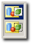
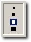
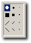
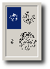

Im Kapitel Werkzeuge in Paint wurden die Werkzeuge, die Ihnen in Paint für ReactOS zur Verfügung stehen, kurz vorgestellt. Einige von ihnen erlauben weitere Einstellungen, um z.B. Liniendicke, Pinselart u.Ä. genauer steuern zu können.
| Option | Beschreibung |
|---|---|
|  | Transparenz - Die obere Einstellung steht für nicht transparent, die untere steht für transparent. Bei den Auswahlwerkzeugen bewirkt die transparente Einstellung, dass Stelen in der Auswahl, die der Hintergrundfarbe entsprechen, nicht gezeichnet werden. Das Bild dahinter scheint daher durch. Beim Textwerkzeug wird standardmäßig ein Rechteck in der Hintergrundfarbe unter den Text gelegt. Bei der transparenten Einstellung hingegen wird der Text direkt auf das Bild geschrieben. |
|  | Radiererbreite - Lässt Sie die Breite des Radierwerkzeuges wählen. Die Kästchen entsprechen 4, 6, 8 und 10 Pixeln. |
|  | Pinselstil - Wählen Sie eine der abgebildeten Pinselformen. Das Pinselwerkzeug zeichnet von nun an mit der gewählten Form. |
|  | Sprühradius - Wählen Sie in dem Feld den Sprühradius aus, den Sie fortan mit der Sprühdose verwenden möchten. |
| Linienbreite - Aus diesem Feld können Sie per Mausklick eine Linienbreite zwischen 1 und 5 Pixeln auswählen. Diese Einstellung beeinflusst die Werkzeuge Linie, Bezier-Kurve, Rechteck, Polygon, Ellipse und abgerundetes Rechteck. | |
| Füllart - Aus diesem Feld können Sie eine von drei Füllarten auswahlen. Bei der ersten Einstellung wird nur der Rahmen gezeichnet. Die zweite Einstellung füllt zudem den Innenraum der Form mit der aktuellen Hintergrundfarbe. Die dritte Einstellung zeichnet eine ausgefüllte Form in der Vordergrundfarbe ohne Rahmen. Diese Einstellungen wirken sich auf das Rechteck, das Polygon, die Ellipse und das abgerundete Rechteck aus. |